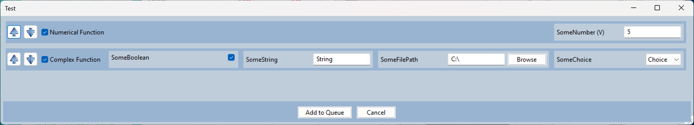
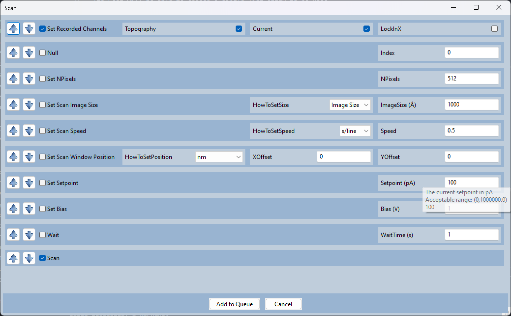
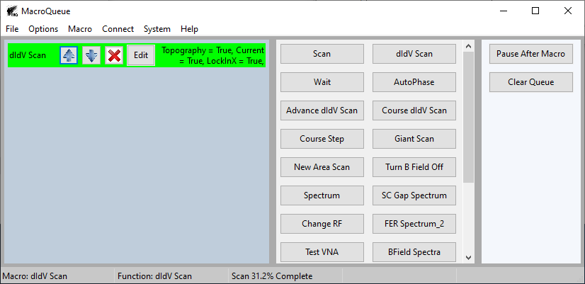

Writing a new function
Go to File -> Open Source Folder.
Add the function to the .py file that corresponds to the instrument you are working with.
Create a new .py file if you are working with a new instrument
Any arbitary python function can be added. An example is shown at the bottom of this page.
Reload the functions. Your function can now be added to a macro.
You could also open and close MacroQueue. MacroQueue loads all the functions on start-up.
Parameter datatypes
The parameters of your function should have a default value so that MacroQueue knows what datatypes to allow. If there is no default value, it’s assumed to be an empty string.
MacroQueue provides helpful controls for floats, booleans, strings, and filepaths.
If you only want the user to choose from a finite number of options, you may also put a list as the default parameter. The user will be able to choose a single list entry from a dropdown menu to be used.
Here are two example functions:
def Numerical_Function(SomeNumber=5):
print(SomeNumber)
def Complex_Function(SomeBoolean=True,SomeString="String",SomeFilePath="C:\\",SomeChoice=['Choice','Combo','3rd','4th']):
if SomeBoolean:
print(SomeString, SomeChoice, SomeFilePath)
These functions will appear in MacroQueue as:
Parameters Metadata (Optional)
You may add metadata for the parameters in a function by placing comments directly above the function. This is used to clarify units, to add explanatory hover text (aka tooltip), and create soft limits for numerical parameters. An example function is shown in the next subsection.
The comments have to be directly above the relavent function with no spaces inbetween.
The comment has to be formated as a python dict. The acceptable keys are:
Name
Units
Will appear next to the name in parentheses.
Disclaimer: This is simply a string. Changing the unit here will not change the code. I show how to change the units in the example function below.
Tooltip
Will appear as the first line of the hover tooltip
Min
Will appear in the second line of the hover tooltip
See Error Handling for additional information
Max
Will appear in the second line of the hover tooltip
See Error Handling for additional information
Example Function
Here are 2 example functions which both change the setpoint. They have the same functionality except the bare function accepts the setpoint in amperes and doesn’t warn you if you set the current too high.
Bare Function:
def Set_Setpoint(Setpoint=100):
STM.setp('SCAN.SETPOINT.AMPERE',Setpoint)
Full Function:
# {"Name":"Setpoint","Units":"pA","Min":0,"Max":1e6,"Tooltip":"The current setpoint in pA"}
def Set_Setpoint(Setpoint=100):
Setpoint *= 1e-12 #Convert from pA to A
STM.setp('SCAN.SETPOINT.AMPERE',Setpoint)
This is how the full function will appear:
Global Variable Hooks
There are several global variables that you can use in your function. They are all defined at the top of their relavent python files.
The main ones to note are:
Cancel
OutgoingQueue
CurrentMacro
The following function uses Cancel and OutgoingQueue:
def Scan():
# Calculates how long the scan will take
Size = float(STM.getp('SCAN.IMAGESIZE.NM.X',''))
Lines = float(STM.getp('SCAN.IMAGESIZE.PIXEL.Y',''))
Speed = float(STM.getp('SCAN.SPEED.NM/SEC',""))
ScanTime = 2*Lines * Size/Speed
# How often the status bar will be updated.
CheckTime = int(np.ceil(ScanTime/500))
# Starts the scan
STM.setp('STMAFM.BTN.START' ,'')
time.sleep(0.1)
StartTime = timer()
Status = STM.getp('STMAFM.SCANSTATUS','')
# Keeps scanning until the scan is done (Status == 2) or the user cancelled the macro (Cancel)
while Status == 2 and not Cancel:
Status = STM.getp('STMAFM.SCANSTATUS','')
StartCheckTime = timer()
# Every {CheckTime} seconds, the status bar is updated.
while not Cancel and timer() - StartCheckTime < CheckTime:
Percent = round(100*((timer() - StartTime)/ScanTime),1)
# Puts f"Scan {Percent}% Complete" in the third spot in the status bar.
OutgoingQueue.put(("SetStatus",(f"Scan {Percent}% Complete",2)))
time.sleep(1)
if Cancel:
# If the user cancelled the macro, stop the scan.
STM.setp('STMAFM.BTN.STOP',"")
time.sleep(0.1)
OutgoingQueue.put(("SetStatus",(f"",2)))
while Status != 0:
Status = STM.getp('STMAFM.SCANSTATUS','')
Cancel becomes True if the user cancels a function, either with the red X or by pressing “clear queue”. Cancel should be used to ensure that the functions stop gracefully. If Cancel isn’t used, the function will finish as normal but the remaining functions in the macro will be ignored.
CurrentMacro contains the information for all the of the functions in the current macro. This can be used if you need to know what the parameters are from the other functions. See Introduction and Course Step for the data structure of a macro.
With OutgoingQueue, the ith slot (starting with i=0) in the status bar can be overridden:
SomeString = f"Scan {Percent}% Complete"
i = 2 # For the third slot
OutgoingQueue.put(("SetStatus",(SomeString, i)))
The first 2 slots in the status bar show the current macro and the current function.
